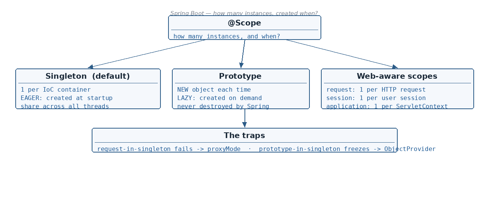

The 5 bean scopes: Singleton, Prototype, Request, Session, Application · Which scopes are eagerly vs lazily…
☕ 5 min read · 🎬 Video walkthrough · 📊 UML diagram · 💻 Runnable code
⚡ In a nutshell — The 5 bean scopes: Singleton, Prototype, Request, Session, Application · Which scopes are eagerly vs lazily initialized — and what that means · How to declare a scope with @Scope (string name or ConfigurableBeanFactory constant) · Why injecting a request-scoped bean into a singleton fails — and the proxyMode fix
Scope answers one question: how many instances of a bean does the IOC container create, and when?

@Scope at all, you get singleton.@Component
@Scope(value = ConfigurableBeanFactory.SCOPE_SINGLETON)
public class PaymentService { }
OR the plain string form — both mean exactly the same:
@Component
@Scope("singleton")
public class PaymentService { }
Good to know: one singleton instance is shared by all threads serving requests. Keep singleton beans stateless (no mutable fields) — otherwise you must make them thread-safe yourself.
getBean() call gets its own instance.@Component
@Scope(value = ConfigurableBeanFactory.SCOPE_PROTOTYPE)
public class ReportBuilder { }
OR
@Component
@Scope("prototype")
public class ReportBuilder { }
@Component
@Scope("request")
public class RequestTracker { }
@Component
@Scope(value = "session")
public class UserCart { }
ServletContext level, so even if several DispatcherServlets (each with its own IOC) run inside one web application, they all share the same instance.@Component
@Scope("application")
public class GlobalCounters { }
Added: a sixth scope exists — websocket (
@Scope("websocket")): one bean instance per WebSocket session. Note that request, session, application and websocket are web-aware scopes — they only work in a web application context.
The eager-vs-lazy column above hides a classic trap: what happens when an eager singleton depends on a lazy request-scoped bean?
The singleton is created at startup, and Spring immediately tries to inject its dependencies. But a request-scoped dependency cannot exist yet — there is no HTTP request at startup — so it will fail.
Solution — scoped proxy:
@Component
@Scope(value = "request", proxyMode = ScopedProxyMode.TARGET_CLASS)
public class RequestTracker { }
proxyMode = TARGET_CLASS creates a dummy (proxy) object and injects it into the singleton at startup. Every time a method is called on it during a real HTTP request, the proxy forwards the call to the actual request-scoped bean of that request.
Complete working example:
@Component
@Scope(value = "request", proxyMode = ScopedProxyMode.TARGET_CLASS)
public class RequestTracker {
private final String requestId = UUID.randomUUID().toString();
public String getRequestId() { return requestId; }
}
@RestController // controllers are singletons by default
public class OrderController {
@Autowired
private RequestTracker tracker; // proxy injected here — startup is safe
@GetMapping("/order")
public String order() {
// each HTTP request sees its OWN tracker instance:
return "handling request " + tracker.getRequestId();
}
}
Good to know: the same
proxyModetrick applies to session-scoped beans inside singletons.TARGET_CLASSuses a CGLIB class proxy;ScopedProxyMode.INTERFACESis the JDK-proxy variant when the bean implements an interface.
Added: the mirror-image trap, and a favourite interview question. Injecting a prototype into a singleton does not fail — it does something sneakier. Injection happens once, when the singleton is created, so the singleton keeps using the same prototype instance forever. The "new object each time" promise silently breaks.
@Component
@Scope("prototype")
public class ReportBuilder { }
@Service // singleton
public class ReportService {
@Autowired
ReportBuilder builder; // ONE prototype, injected once at startup
public void generate() {
// every call reuses that same builder — NOT a new object each time!
}
}
Fix 1 — ObjectProvider (recommended): don't inject the bean, inject a provider and ask the container each time:
@Service
public class ReportService {
private final ObjectProvider<ReportBuilder> builders;
public ReportService(ObjectProvider<ReportBuilder> builders) {
this.builders = builders;
}
public void generate() {
ReportBuilder builder = builders.getObject(); // fresh instance per call
}
}
Fix 2 — @Lookup method: Spring overrides the method at runtime (CGLIB) so it returns a new bean on every call:
@Service
public abstract class ReportService {
public void generate() {
ReportBuilder builder = builder(); // new instance per call
}
@Lookup
protected abstract ReportBuilder builder();
}
Fix 3 — scoped proxy on the prototype (proxyMode = TARGET_CLASS): works, but then every single method call lands on a brand-new instance — usually wrong for a stateful builder, so prefer Fix 1.
Added: two more quick facts interviewers like:
- Spring singleton ≠ GoF singleton. Spring guarantees one instance per bean definition per container — not one per JVM. Two containers (or two
@Beandefinitions of the same class) = two instances.- A singleton can opt out of eager startup with
@Lazyon the class — it is then created on first use. (spring.main.lazy-initialization=trueflips the entire application to lazy.)
RequestContextHolder over request-scoped beans — fewer proxies, clearer flow.@PreDestroy never fires for them; you own their cleanup.proxyMode = TARGET_CLASS) resolve per-call — tiny overhead, fine for config-style beans, avoid in hot loops.@Scope("...") or @Scope(value = ConfigurableBeanFactory.SCOPE_...).@Scope(value = "request", proxyMode = ScopedProxyMode.TARGET_CLASS) — a dummy proxy is injected and delegates per request.ObjectProvider<T>.getObject() per call, or a @Lookup method.@Lazy makes a singleton created on first use instead of at startup.Next topic: Configuration: @Value, @ConditionalOnProperty and @Profile — injecting values and creating beans per environment.
👏 Found this useful? Give it a few claps so more developers discover it, and follow for the whole series — every article ships with a UML diagram, runnable code, a narrated video, and a companion PDF. Happy building! 🚀